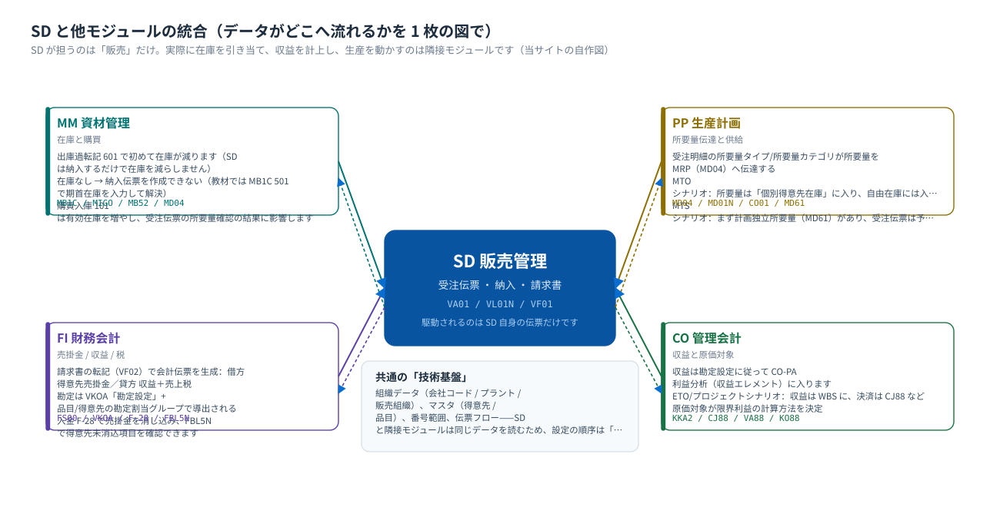
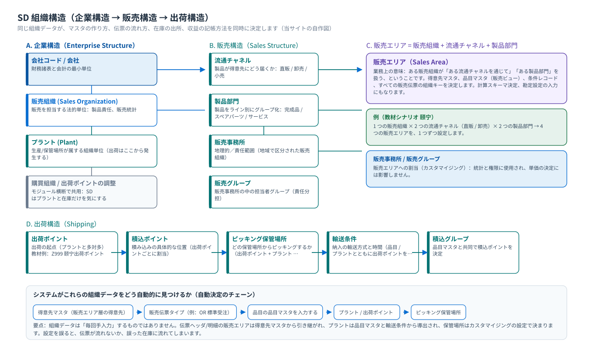
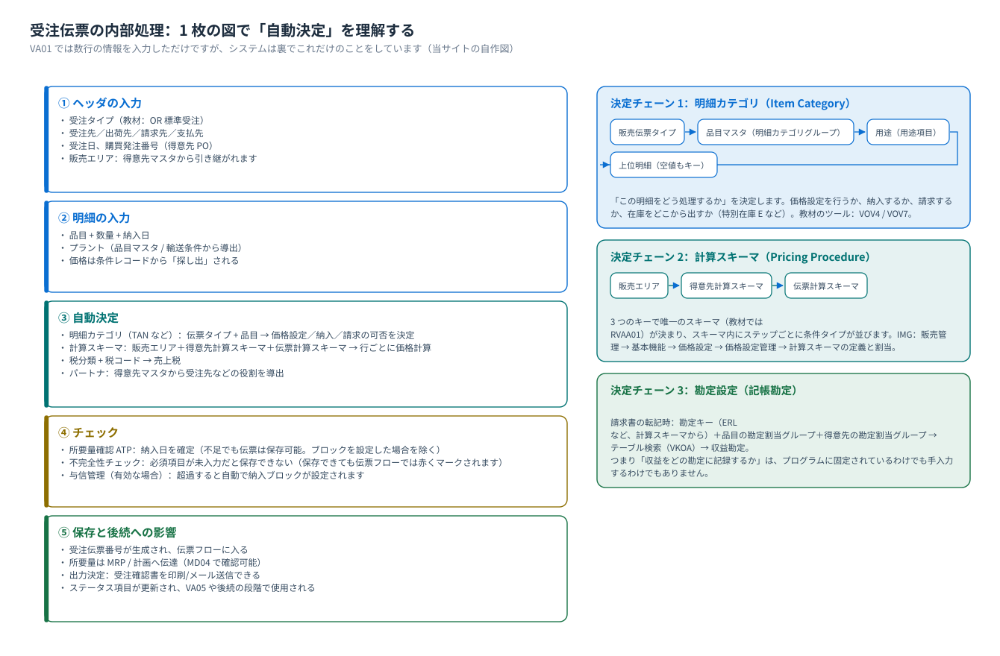

概念と位置づけ：SD は結局何を管理するのか
販売管理 · 3 つの概念レイヤ · 5 つの伝票 · 統合の境界 · よくある誤解
0. まず実機のシステムを見る：このコースはこの画面から始まります
SAP のすべての業務操作は、このクライアント（SAP GUI）で行います：ログオン → 「SAP イージーアクセス」のメニューツリーに入る →左上のコマンドフィールドにトランザクションコード（T-code）を入力 → Enter キーで該当機能へ進みます。以下 3 枚は教材環境の実際の画面です。


Connections / Log On / System Entry Properties）。これは問題ではありません——ログオン画面はクライアントツールで、システムへ入った後の業務画面だけがログオン言語に従います。| インターフェース要素 | どこで | 役割 |
|---|---|---|
| コマンドフィールド（左上） | メニューバーの下にある最初のボックス | T-code を入力して直接ジャンプできます。例えば VA01、VL01N、VF01 |
| メニューツリー | 左側のツリー構造 | モジュール別に機能を閲覧（コードを覚えずに済む入口） |
| ツールバーのボタン | 上部のアイコン列 | 保存、戻る（F3）、終了（Shift+F3）、新規エントリなど |
| ステータスバー（最下部） | ウィンドウの最下部 | システムメッセージ、エラー/警告、および現在の対象のステータスを表示（例の trn03、OVR がステータス識別子です） |
VA03 を入力して Enter キーを押す；③ F1（項目ヘルプを表示）、F4（入力候補一覧を表示）、F3（戻る）という 3 つのショートカットを覚えてください。コース全体でこれらを使用します。1. ひとことで位置づけ
SD（Sales and Distribution、販売管理）は「得意先が買いたい」ということを、最終的に「お金が会社の口座に戻る」までつながります：価格照会 → 見積 → 受注 → 出荷 → 請求 → 入金。扱うのは販売伝票です（誰が買う、何を買う、いくらか、いつ出荷する、いくら請求する）。実際に在庫を減らすのは MM、実際に収益を計上するのは FI、実際に生産を計画するのは PP です。
SD は 5 つの問いに答えます。各問いは 1 つのマスタまたは設定に対応します：
- 何を売るか → 品目マスタ（販売ビュー）+ 明細カテゴリ
- 誰に売るか → 得意先マスタ + 4 つのパートナ役割
- いくらか → 条件レコード + 計算スキーマ（条件技術）
- どう出荷するか → 出荷ポイント / 積込ポイント / ピッキング保管場所 + 出荷伝票
- どう請求して入金するか → 納入関連請求 + 勘定設定（収益勘定）+ 入金消込
2. 隣接モジュールとの役割分担
「SD は 1 枚の受注伝票で会社全体を動かす」——この図はデータがどこへ流れ、どのステップが誰の責任かを示します。
{kind=link}

| イベント（SD で行うアクション） | SD が生み出すもの | 隣接モジュールが何を生成するか | 要点 |
|---|---|---|---|
受注伝票を保存 VA01 | 受注伝票（VBAK / VBAP） | PP：所要量が MRP に渡される（MD04 で確認可能） | 受注伝票の保存では在庫を動かさない |
出荷伝票を登録 VL01N | 納入伝票（LIPS） | MM：ピッキングの準備（この時点ではまだ在庫は減りません） | 納入は出庫を「計画」するだけ |
出庫過転記（PGI）VL02N | 納入ステータスの更新 | MM：移動タイプ 601 の品目伝票で、在庫が減少 | ここで初めて実際に出庫される |
請求書を登録 VF01 | 請求書（VBRK／VBRP） | — | 納入を参照して請求 |
請求書の転記（リリース）VF02 | 請求ステータスが更新され、「凭证已经传送到记账」と表示されます | FI：会計伝票（得意先売掛金の借方 / 収益 + 売上税の貸方） | 勘定は勘定設定で導出される |
入金 F-28 | — | FI：売掛金の消込で、プロセスが一巡 | FBL5N で未消込項目を照会できます |
VA03 で受注伝票を開き → 明細 → 「納入日程行」タブで「所要量タイプ／所要量カテゴリ」に値があるか確認します。次に MD04 で同じ品目を入力し、「受注伝票」の行があるか確認します。3. 3 つの概念レイヤ：組織 → マスタ → 伝票
SD のすべてはこの 3 つのレイヤに収まります。これが設定の順序でもあります：まず組織構造を組み、次にマスタを登録し、最後に伝票を動かします。
| 階層 | 何に答えるか | 代表的な対象 | それが無いと何が起きるか |
|---|---|---|---|
| ① 組織構造 | 会社がどこで売り、何を売り、どこから出荷するか | 会社コード / 販売組織 / 流通チャネル / 製品部門 / 販売エリア / プラント / 出荷ポイント | 伝票が登録できない：得意先マスタと品目の販売ビューの両方で販売エリアを入力する必要があり、販売エリアが存在しないと選択できません |
| ② マスタ | 誰に売るか、何を売るか、いくらで売るか | 得意先マスタ、品目マスタ（販売ビュー）、条件レコード、得意先-品目情報レコード | 伝票は作成できても中身がすべて誤り：得意先がなければ受注伝票を作成できない。条件レコードがなければ価格が 0 になるか不完全のメッセージが出る |
| ③ 伝票 | この商談は現在どのステップまで進んでいるか | 引合 / 見積 / 受注伝票 / 納入 / 請求書（+ MM 品目伝票、FI 会計伝票） | 伝票がなければ業務はありません。伝票同士は「参照」でつながって伝票フローになり、数量と価格の一致を保証します |
4. 5 つの伝票と伝票フロー

| 伝票 | 役割 | T-code を登録 | 標準伝票タイプ | 次のステップ |
|---|---|---|---|---|
| 引合 Inquiry | 得意先の問い合わせで、拘束力はない | VA11 | IN | 見積へ転送可能 |
| 見積 Quotation | 正式な見積。有効期間を付けられる | VA21 | QT | 受注伝票へ転送可能 |
| 受注伝票 Sales Order | 受注：価格設定、所要量確認、納入日 | VA01 | OR | 納入伝票を登録 |
| 出荷伝票 Delivery | 出荷内容、出荷ポイント、ピッキングを決定 | VL01N | LF | ピッキング → 出庫過転記 |
| 請求書 Billing Document | 請求：収益と税を計算し、会計伝票を生成 | VF01 | F2 | FI へ転記 → 入金 |
5. 販売エリア：SD の座標
{kind=link}

販売エリア = 販売組織 + 流通チャネル + 製品部門。教材のシナリオでは：1 つの販売組織 × 2 つの流通チャネル（直販 / 卸売）× 2 つの製品部門 → 合計 4 つの販売エリアを、1 つずつ設定します。それは以下に現れます：得意先マスタの販売ビュー、品目マスタの販売ビュー、条件レコード、すべての販売伝票のヘッダ。
{kind=link}

6. 受注伝票の背景にある自動決定（総覧）
SD で初心者が戸惑うところは、ほとんどが「システムがどうやって何かを自動決定するか」に起因します。この 4 つのチェーンを覚えれば、SD は半分理解できたも同然です：
| 何を決定するか | 何で決定されるか（決定キー） | どこで設定するか | 現象 |
|---|---|---|---|
| 明細カテゴリ Item Category | 販売伝票タイプ + 品目（明細カテゴリグループ）+ 用途 + 上位明細 | IMG：VOV4（決定）/ VOV7（定義） | この明細で価格設定・納入・請求を行うかどうかを決定 |
| 計算スキーマ Pricing Procedure | 販売エリア + 得意先計算スキーマ + 伝票計算スキーマ | IMG：販売管理 → 基本機能 → 価格設定 → 価格設定管理 → 計算スキーマの定義と割当 | どの価格計算表を使うかを決定 |
| 税コード Tax Code | 得意先税分類 + 品目税分類 + 税率（国） | IMG：販売管理 → 基本機能 → 税 | 売上税がいくらになるかを決定 |
| 収益勘定 Revenue Account | 勘定キー（計算スキーマから）+ 品目の勘定割当グループ + 得意先の勘定割当グループ | IMG：販売管理 → 基本機能 → 勘定割当/原価 → 収益勘定設定 | 請求書の転記でどの収益勘定に記帳するかを決定 |
7. 12 のよくある誤解（授業で最もよく質問される）
| # | 誤解 | 正しい理解 |
|---|---|---|
| 1 | SD が在庫を管理 | 違います。在庫は MM の管轄です。SD の納入は「出庫を要求する」だけで、在庫が動くのは出庫過転記（601）です。 |
| 2 | 販売組織は会社コードである | いいえ。1 つの販売組織は 1 つの会社コードにのみ属しますが、1 つの会社コードは複数の販売組織を持てます（多対一）。 |
| 3 | 価格は品目マスタで登録する | 違います。価格は条件レコード（VK11）にあります。品目の販売ビューが決めるのは「販売できるか、税分類、勘定割当グループ」などだけです。 |
| 4 | 納入で在庫が引かれる | いいえ。納入伝票の登録はピッキングの準備にすぎず、出庫過転記（PGI、移動タイプ 601）で初めて品目伝票が生成されます。 |
| 5 | 在庫がなければ受注伝票を保存できない | 保存できます。所要量確認はデフォルトでは確定日を示すだけで、保存はブロックしません（ブロックするかどうかは設定と「ブロック」の有無によります）。 |
| 6 | 納入せずに直接請求できる | できません（通常のプロセス）。請求書は通常、納入を参照して登録します。納入が完了していないと、請求時に請求可能な納入がないと表示されます。教材の順序は納入 → 請求書です。 |
| 7 | 得意先マスタを変更すると、既存の受注伝票も追随して変わります | 自動では変わりません。伝票にはその時点のスナップショットが保存されています；マスタを変更しても影響するのは新規作成の伝票だけです（または伝票を手で変更し再価格設定）。 |
| 8 | 1 つの得意先に番号は 1 つだけ | 複数持てます。受注先 / 出荷先 / 請求先 / 支払先は異なる得意先番号にでき、パートナ役割で関連付けます（教材で出荷先を受注先に割り当てるのがまさにこれです）。 |
| 9 | 得意先マスタの販売ビューは全販売エリアで1つを共用 | 販売エリアごとに個別に登録。同じ得意先でも販売エリアによって異なるデータを持てます。 |
| 10 | 販売エリアは販売部門である | 教材での分かりやすい呼び方です。正式な対象は販売エリア（Sales Area、組織キーの組合せ）と販売事務所（Sales Office、機関）です。 |
| 11 | 計算スキーマは割引表のようなもの | それだけではありません。計算スキーマは価格・割引・運賃・税などの条件タイプをステップ順に並べ、さらに勘定キー（転記する勘定を決定）を持ちます。 |
| 12 | 請求書の転記で会計伝票を手作業で作る必要がある | 不要。請求書のリリース（VF02）時にシステムが自動的に会計伝票を生成し、「伝票はすでに転記に転送されました」と表示します。勘定は勘定設定から決まります。 |
8. 本ページのまとめと次のステップ
- SD が管理する 5 つのことは何ですか？それぞれどのマスタ/設定に支えられていますか？
- なぜ受注伝票の保存は出荷ではなく、出荷は転記ではないのですか？
- 販売エリアはどの 3 つのキーで構成され、どのデータを決定しますか？
- 明細カテゴリ、計算スキーマ、収益勘定はそれぞれ何によって決まりますか？